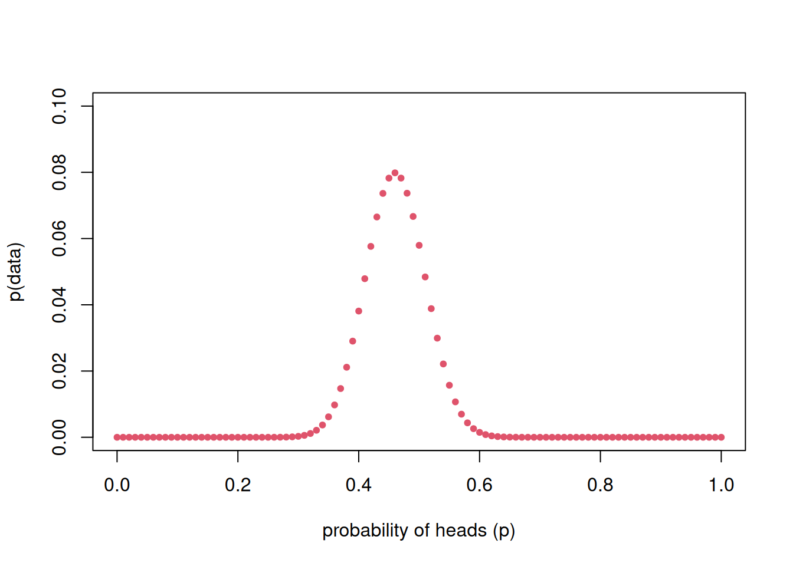
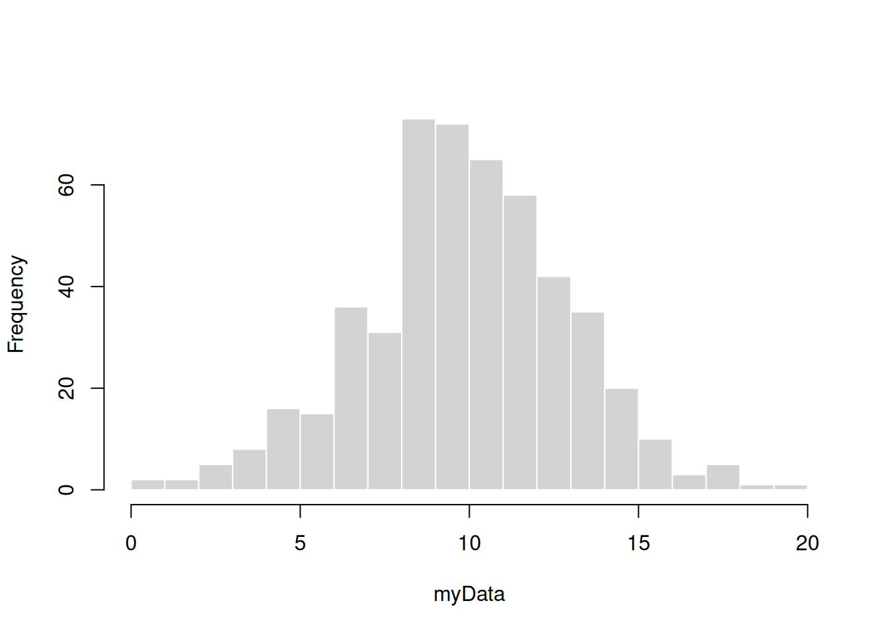
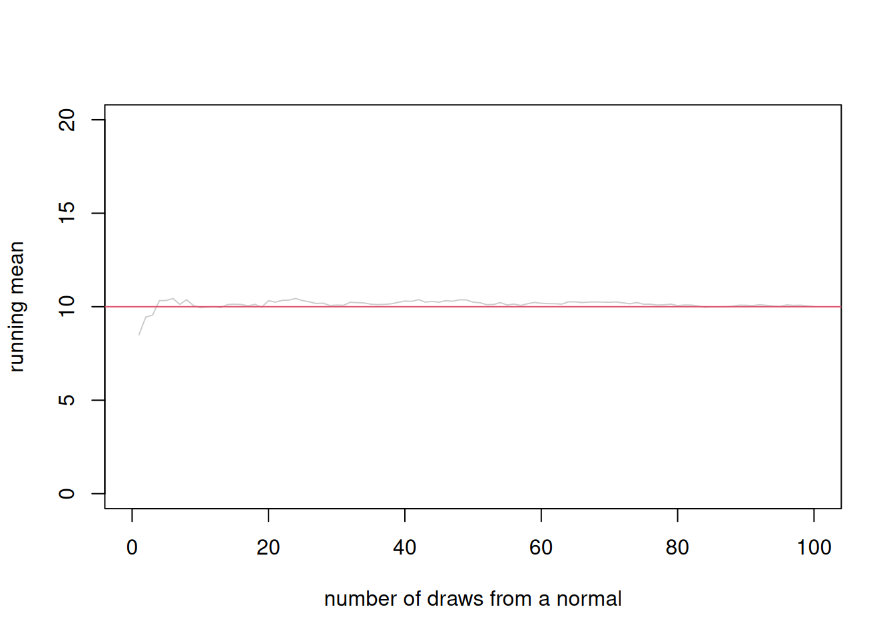

dbinom(x=46, p=0.5, size=100)[1] 0.0579584Welcome to statistics! You’ve already learned the basics of R, along with probability. You’ll now be using your knowledge to make inferences about the world using data. Today we’ll be covering likelihood, a flexible approach for linking data to parameters.
Someone hands us a coin and we flip it 100 times and get 46 heads.
Is the coin fair? (probability of heads = 50%)
What is the most likely probability of flipping heads for this coin?
The likelihood of the data is the probability of the data as a function of some unknown parameters.
How is this different from the probability we’ve been talking about? In probability, we think about some stochastic process, and figure out ways to calculate the probability of possible outcomes. For example: given that the coin is fair, what’s the probability of getting 46 heads out of 100 flips? When we calculate probabilities, we consider a single parameter value and describe the probabilities of all possible outcomes of a process that is parameterized by that value.
In contrast, in statistics, we start with some observed outcomes, and try to figure out the underlying process. For example: given some flip data, can we figure out the fairness of the coin? When we calculate likelihoods, we consider a single outcome (or set of outcomes) and many possible parameter values that could best explain it.
In formulating the problem this way, we are treating the observed data (\(k=46\)) as a known, and treating \(p\) as an unknown parameter of the model.
We can use likelihood in a framework of parametric statistics. In parametric statistics, we treat observed data as draws from an underlying process or population, and we try to learn about that population from our sample.
A statistical parameter is a value that tells you something about a , like the true mean height of students in our class, or the true frequency of a genetic variant in a species.
BUT, we rarely get to know the truth! (we would know the truth if we censused everyone in a population, or repeated a random process an infinite number of times). Instead, we can take samples to try to learn about – or estimate – parameters.
Imagine that we flip a coin 100 times and get 46 heads.
We know that we can model coin flipping using a Binomial distribution where \(x\) is the number of heads, \(n\) is the number of flips, and \(p\) is the probability of heads:
\[ x \sim B(n,p)\]
For this particular case:
\[ 46 \sim B(100,p=??) \]
We can flip this around and write the probability of our data as the conditional probablity of observing 46 heads out of 100 flips given a specific \(p\).
\[ P(\text{observation}) = P(x=46 \mid p, n=100)\]
We can use R to calculate these probabilities. In particular, the dbinom() function lets us calculate the probability of observing a particular number of successes given a specific \(n\) and \(p\). Below is code to calculate the probability of getting 46 heads if the coin is fair (\(p=0.5\)). Note the syntax of ‘size’ for \(n\).
dbinom(x=46, p=0.5, size=100)[1] 0.0579584This code gives us the likelihood of the data for one value of \(p\). But what if we want to calculate it for a range of potential \(p\)s? Turns out we can give dbinom() a vector of \(p\) and it will return a vector of probabilities.
pvector = seq(0,1,length.out=101)
probabilities <- dbinom(x=46,size=100,p=pvector)Instead of printing the list of values, let’s make a plot.
plot(pvector,probabilities, xlim=c(0,1),ylim=c(0,0.1), xlab="probability of heads (p)",ylab="p(data)", pch=20,col=2)
What we’ve just is called a grid search. It is one strategy to identify the parameter that gives you the highest probability of observing your data (aka likelihood). Looking at the plot above, what \(p\) seems to give the highest likelihood?
We can calculate this directly with the following code:
pvector[which.max(probabilities)][1] 0.46Maximum likelihood inference is a method for estimating the values of the parameters of a statistical model that maximize the likelihood of the observed data.
The maximum likelihood estimate (MLE) is the parameter value (or, if there are multiple parameters, the vector of parameter values) that maximize the likelihood of the data. The MLE is our best guess at the true value of the unknown population (or process) parameter.
Above we used a grid search to identify the MLE. However, grid searches can get unwieldy. Luckily, R has built-in functions to identify the MLE more efficiently. See the code below
# function to estimate the p(k=46|n=100,p) for a given p
l.binom <- function(p){
binom.prob <- dbinom(x=46,size=100,prob=p)
return(binom.prob)
}
# use optimize() to get the mle
mle <- optimize(f = l.binom,lower=0,upper=1,maximum=TRUE)
mle$maximum[1] 0.4600159Calculating the probability of some possible outcome makes sense… But calculating the probability of something that has already happened seems bananas!
But, that’s not really what we’re doing - We’re calculating the probability of the observed data as a draw from some distribution, given the values of the parameters of that distribution. Our goal is to use these probabilities to estimate the distribution parameters.
Throughout this part of the course we’ll be focussing on data that is normally distributed so let’s look at a log likelihood in this context. We’ll start by simulating a bunch of data under the normal distribution with a mean of 10 and standard distribution of 3.
set.seed(100)
myData <- rnorm(n=500, mean=10, sd=3)
hist(myData, border="white", main="", breaks=20)
We can use what we just learned to calculate the likelihood of a specific datapoint given a set of parameters. The code before shows how to do that with the first datapoint and the parameters that we used to simulate the data.
myData[1][1] 8.493423dnorm(myData[1], mean=10, sd=3)[1] 0.1172263We can also calculate the MLE for this datapoint (we’ll focus on the mean and not the standard deviation here)
# function to estimate the likelihood for a given mean
l.norm <- function(u){
norm.prob <- dnorm(myData[1],mean=u, sd=3)
return(norm.prob)
}
# use optimize() to get the mle using the range of the data
mle <- optimize(f = l.norm,lower=0,upper=20,maximum=TRUE)
mle$maximum[1] 8.493409Are you surprised that the MLE does not match the mean you used to calculate the data? You may already expect that using a single data point may not be very helpful in estimating the parameter of a distribution. We will get a better estimate using multiple data points. Let’s start with the first 2 data points.
Remember that if you want to know the probability of observing two things, you can multiply the probability of observing the first thing times the probability of observing the second thing. And remember that likelihoods are just probabilities, so we get the likelihood of two data points by multiplying the likelihood of each data point together.
\[ P(\text{2 observations}) = P(\text{observation 1}) \times P(\text{observation 2})\]
The code below does just this (note the prod() function if you haven’t seen it before).
myData[1:2][1] 8.493423 10.394593prod(dnorm(myData[1:2], mean=10, sd=3))[1] 0.01545457We can again use optimize to find the MLE although we will need to update the l.norm() function.
# function to estimate the likelihood for a given mean
l.norm <- function(u){
norm.prob <- prod(dnorm(myData[1:2],mean=u, sd=3))
return(norm.prob)
}
mle <- optimize(f = l.norm,lower=0,upper=20,maximum=TRUE)
mle$maximum[1] 9.443993Now, what about the whole dataset? We should be able to to calculate the likelihood of each data point and multiply these likelihoods together to get the likelihood of seeing all this data.
Wait, what’s going on? How are we getting a probability of 0?

The product of small numbers are smaller numbers. Very very very small numbers cannot be represented in your computer’s memory. This problem is called underflow. We often deal with underflow by using logs. You may remember from your high school or undergrad math classes that
\[\text{log}(A \times B \times C) = \text{log}(A) + \text{log}(B) + \text{log}(C)\]
and more generally:
\[\text{log}\left(\prod\limits_{i=1}^n X_i \right) = \sum\limits_{i=1}^n \text{log}(X_i)\] Additionally, the log is monotonic which means that
If \(X > Y\) then \(\text{log}(X) > \text{log}(Y)\)
In practice, instead of multiplying likelihoods together to calculate the likelihood of observing a large data set, we can sum log likelihoods together.
The code below calculates the log likelihood of all of the data we simulated. Note that we replace the prod() function with the sum() function and use the log=T option in the dnorm() function.
sum(dnorm(myData, mean=10, sd=3, log=T))[1] -1261.091We can now optimize this function
# function to estimate the likelihood for a given mean
l.norm <- function(u){
norm.prob <- sum(dnorm(myData,mean=u, sd=3, log=T))
return(norm.prob)
}
mle <- optimize(f = l.norm,lower=0,upper=20,maximum=TRUE)
mle$maximum[1] 9.887178This returns something pretty close to the value we used to simulate the data. Is it close enough that we trust that our simulation worked? That’s a question we’ll address in a future class.
The law of large numbers simply states that as the number of samples increases, the sample average converges on the population average. (Note that the law of large numbers is often written regarding the expectation, which is a mathematical way of specifying the population average)
Intuitively, the law of large numbers explains why when we tried to calculate the sample mean above, we got a much better estimate of the mean used to simulate the data when we used more data than when we used just one or two data points.
The following visualization might be helpful. Imagine that we sequentially sample from a normal distribution with a mean of 10 (as we did above) and with each sample, we calculate the mean and plot it below.

We can see that for the first few samples we got a lower running mean but over time we end up close to the mean used to simulate the data. If we repeat this exercise a bunch of times we get the following plot:
set.seed(100)
plot(0,xlim=c(0,n),ylim=c(0,20),type='n',
xlab="number of draws from a normal",
ylab="running mean")
draw.running.mean(r = 100,n = 100)
abline(h=10,col=2)While this may seem obvious, it is a fundamental principal across the sciences. For example, the law of large numbers explains why small populations have stronger genetic drift than larger populations – each generation, the gametes that survive are more likely to sample an allele frequency that matches the parental generation if there are many gametes. If there are few gametes surviving each generation, there will be more variation in the mean allele frequencies.
Someone tells you that the average height of a 4-year-old is 1 meter with a standard deviation of 5 centimeters. You want to know if this is accurate so you go to a daycare and measure the heights of 10 4-year-olds.Write, in math, the probability distribution you expect for 4-year-old height.
Use R to calculate the likelihood of observing a 4-year-old who is 110 cm tall if your information is accurate.
What if the actual mean height of a 4-year-old is 115 cm? Now, what is the likelihood of observing a 110 cm tall 4-year-old?
You measure a second kid and find that they are 105 cm tall. Use R to calculate the likelihood of observing both kids if the underlying mean is 1 meter. What about if the underlying mean height is 110 cm?
You measure all the kids and get the following vector of heights: 112 89 112 102 126 114 111 112 112 114. Use a grid search to estimate the MLE for mean height for this data. You can use likelihood or log-likelihood (or both and compare).
Does it make sense to travel to another daycare to measure the height of another 10 kids to get a better estimate of height? How many kids would you want to measure to feel confident?